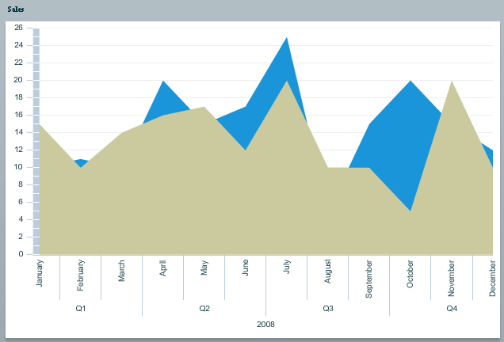
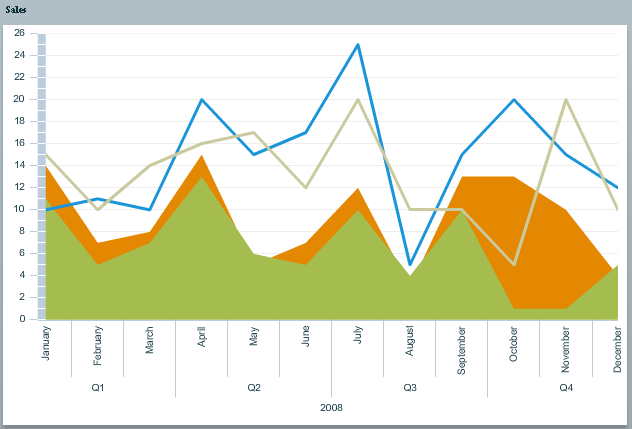
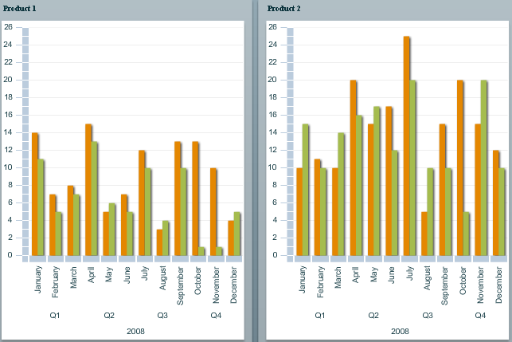

Changing chart and series types
If you want to display the result in something other
than a ColumnChart you have to configure
the OLAPChart.
The following example shows how to use an AreaChart instead of a ColumnChart.
<ilog:OLAPChart width=”100%” height=”100%” id=”olapachart”/>
<ilog:categoryAxis>
<ilog:OLAPAxis padding=”0”/>
</ilog:categoryAxis>
<ilog:chart>
<mx:Component>
<mx:AreaChart width="100%" height="100%"/>
</mx:Component>
</ilog:chart>
<ilog:seriesProviders>
<ilog:OLAPSeriesProvider>
<ilog:series>
<mx:Component><ilog:OLAPAreaSeries/></mx:Component>
</ilog:series>
</ilog:OLAPSeriesProvider>
</ilog:seriesProviders>
</ilog:OLAPChart>
You can see that both the chart type (
ilog:chart) and the series (ilog:seriesProvider)
have to be configured to the new type of chart and corresponding series.
The OLAPAxis padding has also been
changed to align correctly with the AreaChart; it is no longer the default padding value which fitted nicely with ColumnChart.
In this case there is only a single series provider without
any specific selector. This means that all the series created will
be instances of the given OLAPAreaSeries using this fallback provider.
In this example, as all the series are of type area, some are hidden
by others. One way to solve that problem is to make sure that “Product
1” series (France and US) are represented by OLAPAreaSeries but “Product 2” series
(France and US) are represented by OLAPLineSeries.
The following example of a series providers configuration
shows how series providers can be configured to make sure different
series are built depending on the OLAP result row to which they correspond.
<ilog:seriesProviders>
<ilog:OLAPSeriesProvider>
<ilog:selectors>
<ilog:OLAPElementSelector
uniqueName="[ProductDim].[Product].[Product 1]"
type="{OLAPElementSelector.OLAP_MEMBER}"/>
</ilog:selectors>
<ilog:series>
<mx:Component><ilog:OLAPAreaSeries/></mx:Component>
</ilog:series>
</ilog:OLAPSeriesProvider>
<ilog:OLAPSeriesProvider>
<ilog:selectors>
<ilog:OLAPElementSelector uniqueName="[ProductDim].[Product].[Product 2]"
type="{OLAPElementSelector.OLAP_MEMBER}"/>
<ilog:OLAPElementSelector
uniqueName="[CountryDim].[Country].[France]"
type="{OLAPElementSelector.OLAP_MEMBER}"/>
</ilog:selectors>
<ilog:series>
<mx:Component>
<ilog:OLAPLineSeries>
<ilog:lineStroke>
<mx:Stroke color="0x1B95D9" weight="3"/>
</ilog:lineStroke>
</ilog:OLAPLineSeries>
</mx:Component>
</ilog:series>
</ilog:OLAPSeriesProvider>
<ilog:OLAPSeriesProvider>
<ilog:selectors>
<ilog:OLAPElementSelector uniqueName="[ProductDim].[Product].[Product 2]"
type="{OLAPElementSelector.OLAP_MEMBER}"/>
<ilog:OLAPElementSelector uniqueName="[CountryDim].[Country].[US]"
type="{OLAPElementSelector.OLAP_MEMBER}"/>
</ilog:selectors>
<ilog:series>
<mx:Component>
<ilog:OLAPLineSeries>
<ilog:lineStroke>
<mx:Stroke color="0xCACA9E" weight="3"/>
</ilog:lineStroke>
</ilog:OLAPLineSeries>
</mx:Component>
</ilog:series>
</ilog:OLAPSeriesProvider>
</ilog:seriesProviders>
The following figure shows the chart displayed by this
configuration.

Note that more specific selectors are used for “Product 2” in order to specify the stroke for the US
and France series. For more details on how to configure a selector,
you can read the documentation on OLAPElementSelector.
If there is no fallback provider (a provider without
selectors) and no provider matches a given OLAP result row, then the
row will not be displayed as a series in the resulting chart. For
example, if there are rows for “Product 3”, they will not be displayed.
Changing clustering
In the previous example, all the rows of the OLAP query
result were series in a single chart. You may want to see several
charts to visualize the result better. To do this, use the clustering
mechanism of the OLAP chart.
In the row axis of the OLAP query, you have several sets
of data: the first set is product data and the second set is country
data. By default you will get as many series as there are product/country
tuples. However, you might want to see the products spread over different
charts and, on each chart, have the countries represented by series.
To achieve this, set the clusteringDepth property of OLAPChart to 1. As
the product data is first, it will be used to create as many charts
as there are products, and as the country data is second, the depth
1 will be used to build series for each country.
The following code shows how to set the clustering depth.
<ilog:OLAPChart width=”100%” height=”100%”
id=”olapachart” clusteringDepth=”1”>
<ilog:dataAxis>
<mx:LinearAxis/>
</ilog:dataAxis>
</ilog:OLAPChart>
You can see that in addition to the clusteringDepth property, the dataAxis property
has been set on the OLAP chart. This is not mandatory, however it
allows all the charts created in the OLAP chart to share the same
data axis, which is vertical in this case.
The following figure shows the resulting charts. The
orange series are figures for France and the green series are figures
for the US, spread over two charts — the first chart for “Product 1” and the second for “Product
2”.

If you want one chart per country and one series per
product instead, you just have to tweak the row axis of the OLAP query
to change the order of the cross-join to have countries coming first.
rowQueryAxis.addSet(countrySet.crossJoin(productSet));
If you have a query row axis with more than two sets
of data, you can set clusteringDepth to values greater than 1 to determine how many of the data sets
are used to create charts; the remaining data sets will be used to
create series.
Configuring clustering
By default the maximum number of charts displayed on
a screen after clustering is 20. You can change this using the maxNumCharts property.
<ilog:OLAPChart width=”100%” height=”100%” id=”olapachart” clusteringDepth=”1” maxNumCharts="8"/>
As the number of charts displayed on a single page is
limited by maxNumCharts, you can
use the nextPage and previousPage methods of OLAPChart to navigate the pages as in
the following XML sample.
<mx:Button click="olapchart.previousPage()"
enabled="{olapchart.hasPreviousPage}" label="Prev Page"/>
<mx:Button click="olapchart.nextPage()"
enabled="{olapchart.hasNextPage}" label="Next Page"/>
<ilog:OLAPChart width=”100%” height=”100%”
id=”olapachart” clusteringDepth=”1” maxNumCharts="8"/>
Legend
A specific legend object is available for OLAPChart. The following code shows how to display
a legend.
<ilog:OLAPChartLegend dataProvider=”{olapchart}” backgroundColor=”white”/>
The following figure shows the resulting legend displayed.